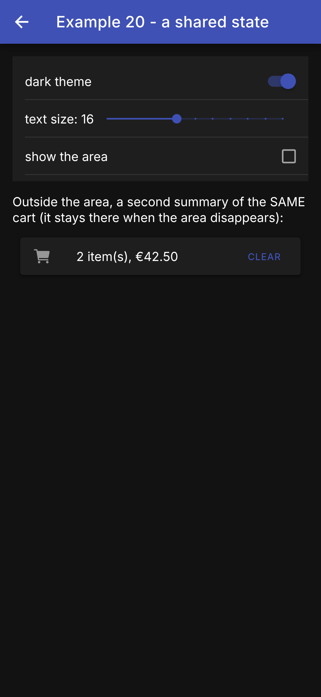

6. 异步操作与共享状态
6.1. 示例 19：Promise、Observable 与定时器
许多事情都发生在“稍后”：定时器的触发、按键以及服务器的响应。[Ionic] 应用程序为此有两种类型：
- [Promise<T>]，即 [JavaScript] 的那个：稍后得到一个（ONE）值（服务器响应、在窗口中做出的选择）。关键字 [async] 和 [await] 使你可以等待它而不阻塞应用程序。这相当于 [Future] 在 [Dart] 中的对应物；
- [Observable<T>]，它来自 [RxJS] 库，随 [Angular] 一起提供：一个随时间推移的值的序列（SEQUENCE）（定时器触发、按键、消息……），这些值由操作符 （[map]、[take]、[debounceTime]、[switchMap]……）进行转换。这相当于 [Stream] 在 [Dart] 中的对应物。[JavaScript] 也有它自己的异步对应物：异步生成器 （[async function*]），它们对应于 [async*] 函数（来自 [Dart]）。
为了显示它们，[Angular] 提供了三种工具，对应于 [FutureBuilder] 和 [StreamBuilder]：管道 [async]（从模板中读取的 [Observable] ）、[toSignal()] （转换为信号的 [Observable] ）和 [resource()]（转换为信号的 [Promise] ）。而对于必须在延迟之后发生的事情：[setTimeout]，或来自 [RxJS] 的定时器（[timer]、[interval]）。
6.1.1. 页面
| // =========================================================================
// src/app/ex19-asynchronous/ex19.page.ts - promise、observable、定时器
// -------------------------------------------------------------------------
// 许多事情都发生在“稍后”：定时器的触发、
// 按键、服务器的响应。有两种类型可用：
// - Promise（JavaScript）：稍后得到一个（ONE）值（服务器的
// 响应）；用 async / await 等待它；
// - Observable（RxJS 库，随 Angular 一起提供）：一个随时间推移的值的
// 序列（SEQUENCE）（定时器触发、按键……），我们用
// “操作符”（map、take、debounceTime、switchMap……）转换它。
// 为了显示它们，Angular 提供了 async 管道（模板中的 Observable）、
// toSignal()（把 Observable 变成信号）和 resource()（把
// Promise 变成信号）。
// =========================================================================
import { AsyncPipe } from '@angular/common';
import { Component, resource, signal } from '@angular/core';
import { takeUntilDestroyed, toSignal } from '@angular/core/rxjs-interop';
import {
IonBackButton, IonButtons, IonCard, IonCardContent, IonCardHeader, IonCardSubtitle, IonContent, IonHeader, IonInput,
IonNote, IonTitle, IonToolbar,
} from '@ionic/angular';
import { debounceTime, finalize, from, map, Observable, of, Subject, switchMap, take, tap, timer } from 'rxjs';
const doctors = ['Marie PELISSIER', 'Paul TATOU', 'Sophie DUPONT', 'Jacques DURAND', 'Martine PELLETIER'];
// 以 Promise 形式出现的定时器：它在 ms 毫秒之后结束
function wait(ms: number): Promise<void> {
return new Promise((resolve) => setTimeout(resolve, ms));
}
// 一个模拟的“服务器”：响应（一个 Promise）在随机延迟之后到达
async function search(text: string): Promise<string[]> {
await wait(200 + Math.floor(Math.random() * 600));
return doctors.filter((m) => m.toLowerCase().includes(text));
}
// 1a. 一个异步生成器（ASYNCHRONOUS GENERATOR）（async function*，带星号）：每个
// yield 都会向遍历它的一方（for await...of）发送（SENDS）一个值
async function* countdown(start: number): AsyncGenerator<number> {
for (let remaining = start; remaining >= 0; remaining--) {
yield remaining;
if (remaining > 0) await wait(1000);
}
}
// “15:30:45”
const currentTime = () => new Date().toTimeString().substring(0, 8);
@Component({
selector: 'app-ex19',
imports: [
AsyncPipe, IonHeader, IonToolbar, IonButtons, IonBackButton, IonTitle, IonContent, IonCard, IonCardHeader,
IonCardSubtitle, IonCardContent, IonInput, IonNote,
],
templateUrl: './ex19.page.html',
styles: `
.number { font-size: 2em; color: var(--ion-text-color); }
.log { font-size: 12px; }
`,
})
export class Ex19Page {
readonly log = signal<string[]>([]);
// 1a. 生成器，被 from() 转换为 Observable；模板
// 用 async 管道显示它。只在字段中创建一次（ONCE）
readonly countdown$: Observable<number> = from(countdown(20));
// 1b. 同样的倒计时，使用 RxJS 操作符：timer(0, 1000)
// 每秒发出 0、1、2……；take(21) 在 21 个值之后停止；
// map 转换这些值（0 -> 20，1 -> 19……）。toSignal：一个信号，其值是
// 最后收到的值（在第一个值之前为 undefined）
readonly countdown = toSignal(timer(0, 1000).pipe(take(21), map((i) => 20 - i)));
// 3. 一个在一秒后完成的 Promise，随后是 resource()：
// 一个带有信号的对象（isLoading()、hasValue()、value()、error()……）
readonly message = resource({
loader: async () => {
await wait(1000);
return 'three (one second later)';
},
});
// 2. 边输入边搜索：Subject 是一个 Observable，我们自己
// 向其中推入（PUSH）值（next）：这里是每一次按键
private readonly keystrokes = new Subject<string>();
readonly results = signal<string[]>([]);
constructor() {
this.keystrokes
.pipe(
// 防抖（DEBOUNCE）：只有在 400 毫秒内没有
// 新的按键之后，才会传递一个值；间隔更近的按键会被忘掉
debounceTime(400),
map((text) => text.trim().toLowerCase()),
// switchMap：每个文本都会启动一次搜索（一个 Observable）；
// 新的（NEW）搜索会放弃（ABANDONS）前一次搜索，其响应将
// 永远不会被传递：不会有“过期”响应
switchMap((text) => this.launch(text)),
// 订阅在页面被销毁时结束
takeUntilDestroyed(),
)
.subscribe((found) => this.results.set(found));
}
private trace(message: string): void {
this.log.update((lines) => [...lines, `${currentTime()} ${message}`]);
}
// 每次按键时调用
input(text: string | null | undefined): void {
this.keystrokes.next(text ?? '');
}
private launch(text: string): Observable<string[]> {
// 少于两个字母：不搜索，没有结果
if (text.length < 2) {
return of([]);
}
this.trace(`search sent: "${text}"`);
let received = false;
// from(Promise)：一个 Observable，它发出 Promise 的值，然后完成
return from(search(text)).pipe(
tap(() => (received = true)),
// finalize：在 Observable 完成时，或在我们取消订阅时（OR）被调用
// （当新的搜索到来时，switchMap 就是这样做的）
finalize(() => {
if (!received) this.trace(`response ignored (stale): "${text}"`);
}),
);
}
}
|
| <!-- ======================================================================
ex19.page.html - promises, observables and timers
====================================================================== -->
<ion-header>
<ion-toolbar color="primary">
<ion-buttons slot="start">
<ion-back-button defaultHref="/" />
</ion-buttons>
<ion-title>Example 19 - asynchrony</ion-title>
</ion-toolbar>
</ion-header>
<ion-content class="ion-padding">
<ion-card>
<ion-card-header>
<ion-card-subtitle>Two countdowns (Observables)</ion-card-subtitle>
</ion-card-header>
<ion-card-content>
<!-- the async pipe subscribes to the Observable, displays each new
value, and unsubscribes when the page disappears; it is null
before the first value. @let: a template variable -->
@let n = countdown$ | async;
<p>async function* and async pipe: <span class="number">{{ n ?? '...' }}</span></p>
<!-- 信号：在第一个值之前为 undefined -->
<p>RxJS and toSignal(): <span class="number">{{ countdown() ?? '...' }}</span></p>
</ion-card-content>
</ion-card>
<ion-card>
<ion-card-header>
<ion-card-subtitle>A search as you type (debounce, stale responses)</ion-card-subtitle>
</ion-card-header>
<ion-card-content>
<!-- (ionInput)：在每次按键时 -->
<ion-input placeholder="at least two letters: pel, dur..." (ionInput)="input($event.detail.value)" />
@for (r of results(); track r) {
<p>• {{ r }}</p>
} @empty {
<ion-note>no result</ion-note>
}
</ion-card-content>
</ion-card>
<ion-card>
<ion-card-header>
<ion-card-subtitle>Waiting for a Promise (resource)</ion-card-subtitle>
</ion-card-header>
<ion-card-content>
<!-- 只要 Promise 尚未完成：显示等待内容 -->
@if (message.hasValue()) {
<p>received: {{ message.value() }}</p>
} @else {
<ion-note>waiting...</ion-note>
}
</ion-card-content>
</ion-card>
<h6>Log</h6>
@for (line of log(); track $index) {
<div class="log">{{ $index + 1 }}. {{ line }}</div>
}
</ion-content>
|
工具：
- 第 28–30 行（.ts）：以 [Promise] 形式出现的定时器。[new Promise(...)] 接收一个启动任务的函数，任务完成时它会调用 [resolve] ；这里，[setTimeout] 在 [ms] 毫秒之后调用它。因此 [await wait(1000)] 会等待一秒而不阻塞应用程序（对应 [Future.delayed] ，来自 [Dart]）；
- 第 33–36 行（.ts）：一个模拟的“服务器”：一个 [async] 函数，它返回一个 [Promise]；它的响应在随机延迟（200 到 800 毫秒之间）后到达；
- 第 40–45 行（.ts）：一个异步生成器：一个 [async function*] 函数（带星号）。每个 [yield] 都会把一个值交给遍历该生成器的一方；在两个值之间，函数等待一秒。可以用循环 [for await (const n of countdown(20))] 来遍历它。
第一个倒计时：
- 第 67 行（.ts）：生成器，通过 [Observable] 被 [from()] 转换，它接受异步生成器、[Promise]、数组……按照惯例，包含 [Observable] 的变量，其名称以 [$] 结尾；
- 第 23 行（HTML）：管道 [async] 订阅 [Observable]，显示每个新值，并在页面关闭时自动取消订阅；在收到第一个值之前，它为 [null] 。[@let n = ...] 声明一个模板变量，在第 24 行读取（[n ?? '...']：只要 [n] 等于 [null]，就显示三个点）。与 [Flutter] 一样，[Observable] 只在类字段中创建一次（ONCE）：如果模板调用一个创建它的方法，每次屏幕更新都会重新开始倒计时！
第二个，使用 [RxJS] 操作符：
- 第 73 行（.ts）：[timer(0, 1000)] 立即输出 0，然后每秒输出 1、2、3……；[pipe] 方法依次对它应用各个操作符：[take(21)] 只保留前 21 个值（然后 [Observable] 结束）；[map] 转换每个值（0 变为 20，1 变为 19……）。[toSignal] 订阅 [Observable] 并把它变成一个信号，其值等于最后收到的值（在第一个值之前为 [undefined] ）；页面被销毁时它会取消订阅；
- 第 26 行（HTML）：像读取任何其他信号一样读取该信号。
预期的 [Promise]：
- 第 77–82 行（.ts）：[resource()] 接收一个返回 [loader] 的 [Promise] 函数，调用它，并把它的状态以信号的形式公开：[isLoading()]、[hasValue()]、[value()]、[error()]。如果我们提供一个选项 [params]——一个读取信号的函数——那么每当这些信号变化时，资源就会重新加载（而 [loader] 则不会被监视）：我们将用它来查询服务器；
- 第 51–55 行（HTML）：在 [Promise] 尚未完成时，显示占位内容；完成之后，显示它的值（这对应于 [FutureBuilder] 和 [ConnectionState.done]）。
边输入边搜索：
- 第 86 行（.ts）：[Subject] 是一个 [Observable] ，我们自己向其中推入（PUSH）值（[next]）：这里是每一次按键（第 111–113 行，由字段的 [(ionInput)] 事件触发，见 HTML 的第 36 行）；
- 第 94 行（.ts）：防抖：我们等待用户停顿之后再查询服务器，而不是对每次按键都发送请求。[debounceTime(400)] 操作符只在 400 毫秒内没有新值之后才发出一个值：间隔太近的按键会被忽略。使用 [Flutter] 时，你必须在每次按键时手动取消并重新启动一个定时器（[Timer]）；
- 第 95 行（.ts）：文本，去掉两端的空格，并转为小写；
- 第 99 行（.ts）：过期响应。在另一次搜索已经发起之后（AFTER）才到达的响应必须被忽略：否则，旧搜索的慢响应会覆盖新搜索的响应。操作符 [switchMap] 处理这个问题：对于每个文本，它调用 [launch]，后者返回一个 [Observable] （即该搜索）；当新文本到达时，它会取消订阅（UNSUBSCRIBES），取消前一次搜索——其响应将永远不会被传递——然后发起新的搜索。使用 [Flutter] 时，则必须给搜索编号并比较编号；
- 第 101 行（.ts）：[takeUntilDestroyed()] 在页面被销毁时终止订阅：没有它，[Subject] 及其操作符会继续存在（在 [dispose] 中对应于 [Flutter] 的做法）。它必须在“注入上下文”中调用：在这里就是构造函数；
- 第 103 行（.ts）：[subscribe] 订阅 [Observable]：在有人订阅之前什么也不会发生。每个结果列表都存储在一个信号中，由模板显示（HTML 的第 37–41 行）；
- 第 117–119 行（.ts）：少于两个字母：不搜索；[of([])] 是一个立即返回空列表的 [Observable] ；
- 第 123–130 行（.ts）：搜索：服务器的 [Promise]，被 [from()] 转换为 [Observable]。[tap] 顺带执行一个操作而不修改值：记录响应已到达。[finalize] 在 [Observable] 终止时，或用户取消订阅时被调用：如果响应没有到达，就说明 [switchMap] 放弃了这次搜索，并把这一点记入日志。
我们快速输入“p”、“pe”和“pel”：只会发送一次搜索。然后输入“du”，在“du”的响应到达之前又输入“dup”：在发送“dup”的搜索的那一刻，“du”的搜索就被放弃了（它的响应被忽略）。左图是页面刚打开时的样子；右图是五秒之后：
在日志中，“response ignored”这一行出现在“search sent: ‘dup’”这一行之前：[switchMap] 在发起新搜索之前先取消了对旧搜索的订阅。
在 [Dart] 中，[Future] 和 [Stream] 位于基础库中，而 [async]、[await]、[async*]、[yield] 和 [await for] 属于语言本身。在 [JavaScript] 中，[Promise]、[async]、[await] 和异步生成器同样包含在语言中；但对于值序列，[Angular] 依赖 [RxJS] 库，它的上百个操作符可以用一行代码解决防抖和过期响应之类的问题。[Angular] 的 HTTP 客户端（示例 22 至 25）同样返回 [Observable]。自从有了信号，[Angular] 只把 [RxJS] 留给事件流，并使用 [toSignal] 或 [resource] 来显示它们。
6.2. 示例 20：共享状态
与前面几课相同的问题：应用程序数据有哪些“作用域”？
- 组件的局部状态在组件被销毁时消失；
- “store”的状态由所有组件共享，并且在它们被移除后依然存在……但不会在应用程序关闭后保留；
- 存储在设备上的状态在应用程序关闭后依然存在。
6.2.1. 购物车
| // =========================================================================
// src/app/ex20-shared-state/stores/cart.ts - 一个共享状态（SHARED STATE）：一个服务
// -------------------------------------------------------------------------
// “store”是一种存在于页面和组件之外（OUTSIDE）的状态，
// 以唯一（ONE）一个实例存在，由所有读取它的一方共享。
// 在 Angular 中，它是一个服务（SERVICE）（见示例 14），其状态由
// 信号（SIGNALS）构成。通常的组织方式：
// - 状态（STATE）：私有（PRIVATE）信号（_items）；
// - 它们的读取：只读视图（asReadonly）；
// - 操作（ACTIONS）：方法，是唯一修改状态的部分；
// - 计算值：computed 信号。
// 组件通过 inject(Cart) 获得它；读取这些信号的
// 模板会在它们（THEY）变化时更新，而且只在它们变化时更新。
// providedIn: 'root'：服务在第一次被请求时创建，并在
// 应用程序运行期间一直存在：它在组件被移除后依然存在……但
// 不会在应用程序停止后保留。
// =========================================================================
import { computed, Injectable, signal } from '@angular/core';
export interface Item {
label: string;
price: number;
}
@Injectable({ providedIn: 'root' })
export class Cart {
private readonly _items = signal<Item[]>([]);
// 状态的不可修改（NON-MODIFIABLE）视图：只有这些操作才能改变它
readonly items = this._items.asReadonly();
readonly count = computed(() => this._items().length);
readonly total = computed(() => this._items().reduce((s, a) => s + a.price, 0));
add(item: Item): void {
// 一个新的（NEW）数组：信号会发现它的值已经变化
this._items.update((items) => [...items, item]);
}
clear(): void {
this._items.set([]);
}
}
|
store 是一种跨越页面和组件的状态，作为单个实例存在，由所有访问它的一方共享。使用 [Angular] 时，它就是一个服务 （见示例 14），其状态由信号组成：无需添加任何库，而 [Flutter] 则是围绕 [ChangeNotifier] 使用 [provider] 包。
- 第 26 行：[providedIn: 'root']：服务在第一次被请求（[inject(Cart)]）时创建，作为单个实例存在，并在应用程序运行期间一直保持活动；
- 第 28 行：状态：一个私有信号；
- 第 30 行：状态的只读视图（[asReadonly()]）：只有操作（action）才能修改它；
- 第 31–32 行：计算值：[computed] 信号，只在商品列表变化时才重新计算；
- 第 34–41 行：操作：只有这些方法才会修改状态。第 36 行：一个新的（NEW）数组（[...items] 复制各商品），而不是像旧版本那样使用 [push]：信号会比较新旧值（[===]），只有在它们不同时才通知订阅者。无需编写 [notifyListeners()]：信号会负责通知。
6.2.2. 偏好设置
| // =========================================================================
// src/app/ex20-shared-state/stores/preferences.ts - 在应用停止后依然存在的状态
// -------------------------------------------------------------------------
// 要让一份数据在应用程序停止后依然存在，就必须把它存储
// 在设备上（ON THE DEVICE）。@capacitor/preferences “插件”提供了一个小型的
// 键 -> 值字典（字符串），专属于该应用程序并
// 保存在设备上（Android：SharedPreferences；在
// 浏览器中：localStorage）。它的所有方法都是异步的（ASYNCHRONOUS）
// （它们返回一个 Promise）：
// - 启动时，我们读取存储的值；
// - 每次变化时，我们再次写入它们。
// 我们绝不（NEVER）在这里存储敏感数据（密码、令牌）：它们是
// 以明文写入的。
// =========================================================================
import { effect, Injectable, signal } from '@angular/core';
// “as DeviceStorage”：已重命名，以免与我们自己的类混淆
import { Preferences as DeviceStorage } from '@capacitor/preferences';
const darkKey = 'example20.dark';
const sizeKey = 'example20.size';
@Injectable({ providedIn: 'root' })
export class Preferences {
// 初始状态：默认值，等待读取完成
private readonly _dark = signal(false);
private readonly _size = signal(16); // 文本大小
readonly dark = this._dark.asReadonly();
readonly size = this._size.asReadonly();
constructor() {
this.load();
// 一个副作用（EFFECT）：每当它读取的某个信号变化时就会重新执行的函数。
// 它把偏好设置应用于整个（WHOLE）应用程序：
// - <html> 上的 ion-palette-dark 类：Ionic 的深色主题
// （见 styles.scss）；
// - <html> 的字体大小：Ionic 的组件
// 以 rem（该大小的倍数）表示尺寸，因此它们会随之变化
effect(() => {
document.documentElement.classList.toggle('ion-palette-dark', this._dark());
document.documentElement.style.fontSize = `${this._size()}px`;
});
}
// 设备上存储的内容（如果键不存在，value 为 null）
private async load(): Promise<void> {
const dark = await DeviceStorage.get({ key: darkKey });
const size = await DeviceStorage.get({ key: sizeKey });
if (dark.value !== null) this._dark.set(dark.value === 'true');
if (size.value !== null) this._size.set(Number(size.value));
}
// 每项偏好设置一个可选参数：我们只更改所提供的内容
update({ dark, size }: { dark?: boolean; size?: number }): void {
if (dark !== undefined) {
this._dark.set(dark);
DeviceStorage.set({ key: darkKey, value: String(dark) }); // 写入设备
}
if (size !== undefined) {
this._size.set(size);
DeviceStorage.set({ key: sizeKey, value: String(size) });
}
}
}
|
要让数据在应用程序关闭后仍然保留，就必须把它存储在设备上。[@capacitor/preferences] “插件”来自 [Capacitor] ，它提供一个小型的键值字典（字符串），专属于该应用程序并存储在设备上：在 [SharedPreferences] （来自 [Android] ，即 [shared_preferences] 包（来自 [Flutter]）所使用的那个）上实现，而在浏览器中则使用 [localStorage]。它的所有方法都是异步的：它们返回一个 [Promise]。
- 第 18 行：该插件本身也叫 [Preferences]；[as DeviceStorage] 在此文件中重命名它，以避免与我们自己的类混淆；
- 第 26–29 行：初始状态，各信号设为默认值，以及它们的只读视图；
- 第 32 行：服务创建时开始读取设备。读取是异步的：在短暂的片刻内，默认值生效；
- 第 39–42 行：一个副作用 （[effect]）：每当它读取的某个信号变化时就会重新执行的函数。它把偏好设置应用于整个（WHOLE）应用程序：[<html>] 标签上的 CSS 类 [ion-palette-dark] 会激活 [Ionic] 中的深色主题（定义在 [styles.scss] 中）；[<html>] 中的字体大小会放大文本，因为 [Ionic] 的组件以 [rem] （该大小的倍数）来表示它们的尺寸。副作用就是为此而设：把信号传递给外部世界（DOM、存储等）；不得用它来计算其他信号（[computed] 就是为此设计的）；
- 第 46–51 行：设备读取操作：[DeviceStorage.get] 返回一个来自 [Promise] 的 [{ value }]，其中如果键不存在，[value] 等于 [null] 。这些值是字符串：需要进行转换；
- 第 54–63 行：一个带可选参数的单一操作（一个解构对象：[{ dark, size }]）：只修改所提供的值，并立即把它写入设备（[DeviceStorage.set]）。我们不等待写入操作完成：信号已经变化了。
切勿在这里存储敏感数据（密码、令牌）：它是以明文写入的。为此，有一些使用系统保险库的插件（[Keystore] 属于 [Android]，[Keychain] 属于 [iOS]）。
6.2.3. 组件
| // =========================================================================
// src/app/ex20-shared-state/components/shop.ts - 向共享购物车添加（ADDS）商品
// -------------------------------------------------------------------------
// 商店只是调用（CALLS）购物车的一个操作；它的模板不读取
// 购物车的任何信号：购物车变化时它不会更新。
// =========================================================================
import { CurrencyPipe } from '@angular/common';
import { Component, inject } from '@angular/core';
import { IonButton, IonCard, IonCardContent, IonCardHeader, IonCardSubtitle, IonIcon } from '@ionic/angular';
import { addIcons } from 'ionicons';
import { add } from 'ionicons/icons';
import { Item, Cart } from '../stores/cart';
const products: Item[] = [
{ label: 'Consultation', price: 30 },
{ label: 'Vaccine', price: 12.5 },
];
@Component({
selector: 'app-ex20-shop',
imports: [CurrencyPipe, IonCard, IonCardHeader, IonCardSubtitle, IonCardContent, IonButton, IonIcon],
templateUrl: './shop.html',
})
export class Shop {
readonly products = products;
// 与其他组件相同（SAME）的购物车（唯一的一个实例）
readonly cart = inject(Cart);
constructor() {
addIcons({ add });
}
}
|
| <!-- ======================================================================
shop.html - two products to add to the cart
====================================================================== -->
<ion-card>
<ion-card-header>
<ion-card-subtitle>Shop</ion-card-subtitle>
</ion-card-header>
<ion-card-content>
@for (p of products; track p.label) {
<ion-button fill="clear" (click)="cart.add(p)">
<ion-icon slot="start" name="add" />
{{ p.label }} ({{ p.price | currency: 'EUR' }})
</ion-button>
}
</ion-card-content>
</ion-card>
|
- 第 28 行（.ts）：[inject(Cart)] 返回与其他组件相同的（SAME）购物车；
- 第 11 行（html）：商店只是调用一个操作。它的模板不读取购物车中的任何信号：购物车变化时它不会更新（在 [context.read<Cart>()] 与 [provider] 中就是如此）；
- 第 13 行（html）：[currency] 管道以英式风格格式化价格（见示例 09）。
| // =========================================================================
// src/app/ex20-shared-state/components/cart-summary.ts - 读取（READS）同一个购物车
// -------------------------------------------------------------------------
// 模板读取购物车的两个信号，count() 和 total()：只要其中
// 一个（ONE）变化就会更新，而且仅在此时更新。
// =========================================================================
import { CurrencyPipe } from '@angular/common';
import { Component, inject } from '@angular/core';
import { IonButton, IonCard, IonIcon, IonItem, IonLabel } from '@ionic/angular';
import { addIcons } from 'ionicons';
import { cart } from 'ionicons/icons';
import { Cart } from '../stores/cart';
@Component({
selector: 'app-ex20-cart-summary',
imports: [CurrencyPipe, IonCard, IonItem, IonIcon, IonLabel, IonButton],
templateUrl: './cart-summary.html',
})
export class CartSummary {
readonly cart = inject(Cart);
constructor() {
addIcons({ cart });
}
}
|
| <!-- ======================================================================
cart-summary.html - the number of items and the total of the cart
====================================================================== -->
<ion-card>
<ion-item lines="none">
<ion-icon slot="start" name="cart" />
<ion-label>{{ cart.count() }} item(s), {{ cart.total() | currency: 'EUR' }}</ion-label>
<ion-button slot="end" fill="clear" [disabled]="cart.count() === 0" (click)="cart.clear()">
Clear
</ion-button>
</ion-item>
</ion-card>
|
- 第 8–9 行（HTML）：模板读取购物车中的两个信号，[count()] 和 [total()]：只要其中任何一个变化，它就会更新，而且仅在此时更新。使用 [provider] 时，你必须在 [context.watch] （整个购物车）和 [context.select] （单个项目）之间做选择；而有了信号，精确度是自动的：它取决于所读取的内容。
| // =========================================================================
// src/app/ex20-shared-state/components/local-counter.ts - 一个局部状态（LOCAL）
// -------------------------------------------------------------------------
// clicks 信号属于该组件：它随组件一起创建，也随组件一起
// 消失。
// =========================================================================
import { Component, input, signal } from '@angular/core';
import { IonButton, IonCard, IonItem, IonLabel } from '@ionic/angular';
@Component({
selector: 'app-ex20-local-counter',
imports: [IonCard, IonItem, IonLabel, IonButton],
templateUrl: './local-counter.html',
})
export class LocalCounter {
readonly title = input.required<string>();
readonly clicks = signal(0);
}
|
| <!-- ======================================================================
local-counter.html - a click counter
====================================================================== -->
<ion-card>
<ion-item lines="none">
<ion-label>{{ title() }}</ion-label>
<ion-button slot="end" fill="outline" (click)="clicks.set(clicks() + 1)">{{ clicks() }} click(s)</ion-button>
</ion-item>
</ion-card>
|
一个局部状态（.ts 文件的第 18 行），它随组件一起创建和销毁。
6.2.4. 页面
| // =========================================================================
// src/app/ex20-shared-state/ex20.page.ts - 数据的三种“作用域”
// -------------------------------------------------------------------------
// - 组件（LocalCounter）的局部状态（LOCAL）随组件一起消失；
// - 服务（购物车）的状态（SERVICE）由所有组件共享，
// 并在它们被移除后依然存在——但不会在应用程序停止后保留；
// - 存储在设备上的状态（偏好设置）在应用停止后依然存在。
// 还有 CSS 类 ion-hide：内容被隐藏（HIDDEN），但没有被移除；它的
// 局部状态得以保留。
// 取消勾选再重新勾选“显示该区域”，然后停止并重新启动
// 应用程序：比较一下。
// =========================================================================
import { Component, inject, signal } from '@angular/core';
import {
IonBackButton, IonButtons, IonCheckbox, IonContent, IonHeader, IonItem, IonLabel, IonList, IonRange, IonTitle,
IonToggle, IonToolbar,
} from '@ionic/angular';
import { Shop } from './components/shop';
import { LocalCounter } from './components/local-counter';
import { CartSummary } from './components/cart-summary';
import { Preferences } from './stores/preferences';
@Component({
selector: 'app-ex20',
imports: [
IonHeader, IonToolbar, IonButtons, IonBackButton, IonTitle, IonContent, IonList, IonItem, IonLabel, IonToggle,
IonRange, IonCheckbox, Shop, CartSummary, LocalCounter,
],
templateUrl: './ex20.page.html',
})
export class Ex20Page {
readonly preferences = inject(Preferences);
// 页面的一个局部状态
readonly areaVisible = signal(true);
}
|
| <!-- ======================================================================
ex20.page.html - a shared state
====================================================================== -->
<ion-header>
<ion-toolbar color="primary">
<ion-buttons slot="start">
<ion-back-button defaultHref="/" />
</ion-buttons>
<ion-title>Example 20 - a shared state</ion-title>
</ion-toolbar>
</ion-header>
<ion-content class="ion-padding">
<ion-list>
<ion-item>
<!-- [checked]：服务的值；(ionChange)：修改它的操作 -->
<ion-toggle [checked]="preferences.dark()"
(ionChange)="preferences.update({ dark: $event.detail.checked })">dark theme</ion-toggle>
</ion-item>
<ion-item>
<!-- snaps / ticks：刻度，每一步一个 -->
<ion-range [min]="12" [max]="22" [step]="1" [snaps]="true" [ticks]="true" [value]="preferences.size()"
(ionChange)="preferences.update({ size: +$event.detail.value })">
<ion-label slot="label">text size: {{ preferences.size() }}</ion-label>
</ion-range>
</ion-item>
<ion-item>
<ion-checkbox [checked]="areaVisible()" (ionChange)="areaVisible.set($event.detail.checked)">
show the area</ion-checkbox>
</ion-item>
</ion-list>
<!-- 已移除：这些组件消失，连同它们的局部状态 -->
@if (areaVisible()) {
<app-ex20-shop />
<app-ex20-cart-summary />
<app-ex20-local-counter title="Local state" />
}
<!-- 已隐藏（ion-hide：display none）：组件仍保留在内存中，它的状态得以保留 -->
<app-ex20-local-counter title="Local state, hidden by a CSS class" [class.ion-hide]="!areaVisible()" />
<p>Outside the area, a second summary of the SAME cart (it stays there when the area disappears):</p>
<app-ex20-cart-summary />
</ion-content>
|
- 第 33 行（.ts）：偏好设置，一个服务；它在第一次被请求时创建（并读取设备）；
- 第 35 行（.ts）：页面的一个局部状态：该区域是否显示？
- 第 18–19 行（html）：一个切换开关（[<ion-toggle>]）：[[checked]] 从服务接收值，而 [(ionChange)] 调用服务的操作；
- 第 23–26 行（html）：一个取值范围为 12 到 22 的滑块（[<ion-range>]），带有刻度标记（[snaps]、[ticks]）；[+$event.detail.value] 把值转换为数字；
- 第 29–30 行（html）：一个复选框，与局部状态相连；
- 第 35–39 行（HTML）：被移除（[@if]）；该区域消失——它的组件连同其局部状态一起被销毁（DESTROYED）；
- 第 41 行（html）：通过 [ion-hide] 这个来自 [Ionic] 的 CSS 类（[display: none]）隐藏；组件仍保留在内存中：它的状态得以保留。[[class.ion-hide]="..."] 在表达式为 true 时设置该类。（这在以前是 [Visibility(maintainState: true)] ，来自 [Flutter]。）
- 第 44 行（html）：同一购物车的第二个摘要，位于该区域之外。
购物车和偏好设置在整个应用程序中共享（[providedIn: 'root']）。要让服务专属于某个页面（每个页面一个实例，随页面一起销毁），需要把它声明在其组件的 [providers] 中，如示例 21 所示。
6.2.5. 运行
我们添加两件商品，点击第一个局部计数器两次、第二个一次（左图）；我们移除该区域并切换到深色主题（中图）；然后恢复该区域（右图）：
 |  |  |
购物车在该区域被移除后依然存在（如第二个摘要所示）；被移除的计数器重置为零；被隐藏的计数器保留了它的值。停止应用程序并重新启动它（在浏览器中：重新加载页面）：深色主题和文字大小得以保留，而购物车是空的。偏好设置作用于整个应用程序：当你回到菜单时，它也处于深色模式。
为什么不使用状态管理库？[Angular] 有一些可用的库（[NgRx]、它的变体 [SignalStore]、[NGXS]……），就像 [Flutter] 也有（[provider]、[Riverpod]、[Bloc]……）一样。但依赖注入和信号已经解决了最关键的部分：基于信号的服务就是一个 store，而案例研究将使用它。